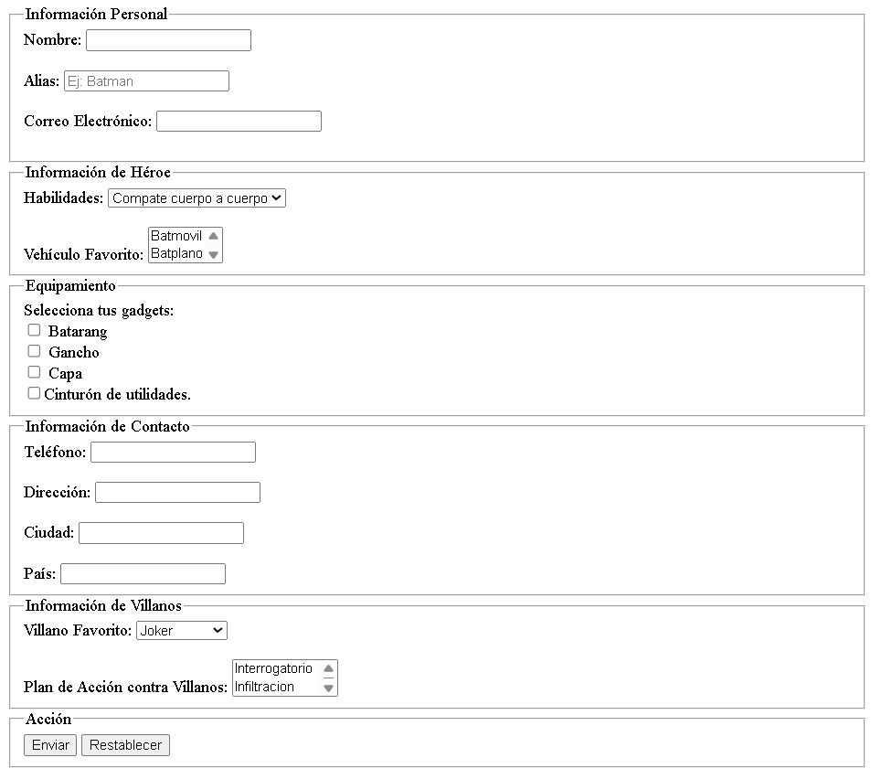
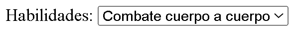
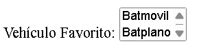
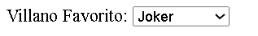
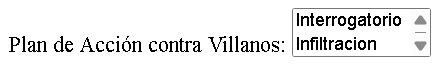

A partir de la imagen proporcionada, debes escribir tu documento HTML:

En el select de habilidades son 5 opciones: Combate cuerpo a cuerpo, Tecnología, Estrategia, Investigación y Acrobacia.

En el select de Vehículo Favorito son 3 opciones: Batmovil, Batplano y Batmoto. El select debe visualizar dos opciones sin desplegar.

En el select de Villano Favorito son 6 opciones: Joker, Penguin, Riddler, Twoface, Bane y Catwoman,

En el select de Plan de Acción contra Villanos son 3 opciones: Interrogatorio, Infiltración y confrontación. El select debe visualizar dos opciones de manera predeterminada.
